Where the data came from
In your own words, explain how, where, and why each source was gathered, and how the sources fit the topic.
| Source | Access | What it provides | Raw file |
|---|---|---|---|
| CDC PLACES | API, no key | Frequent mental distress, short sleep, and depression by county | raw_cdc_data.csv |
| US Census, American Community Survey 5-year (2022) Data Profile | API, key required | Income, education, housing, insurance, age, and family measures by county | raw_census_data.csv |
| County Health Rankings and Roadmaps (2025) | CSV download | Birth weight, child poverty, health behaviors, clinical care, and air quality by county | analytic_data_2025.csv |
| USDA Economic Research Service, Rural-Urban Continuum Codes (2023) | CSV download | Metro and non-metro classification of each county | rural_urban_codes_2023.csv |
APIs used
Two of the sources were gathered with Python through an API. The code is in data_prep.py.
CDC PLACES (Socrata API)
Website: cdc.gov/places. Core endpoint: https://chronicdata.cdc.gov/resource/swc5-untb.json. Example GET request:
https://chronicdata.cdc.gov/resource/swc5-untb.json?$select=year,stateabbr,locationname,locationid,measureid,data_value&$where=measureid in('MHLTH','SLEEP','DEPRESSION') and datavaluetypeid='CrdPrv'&$limit=50000US Census Bureau API
Website: census.gov, ACS 5-year data. Core endpoint: https://api.census.gov/data/2022/acs/acs5/profile. A free key is required (key signup). Example GET request, with the key left out:
https://api.census.gov/data/2022/acs/acs5/profile?get=NAME,DP03_0062E,DP03_0099PE&for=county:*&in=state:*&key=YOUR_KEYRaw data, clean data, and code
Every file is linked below. The full folders are on GitHub: raw_data, clean_data, and code.
| File | Description |
|---|---|
| raw_cdc_data.csv | Raw CDC PLACES pull (2022 and 2023 release years) |
| raw_cdc_api.json | First records of the CDC API response |
| raw_census_data.csv | Raw Census ACS pull, all counties and Puerto Rico municipalities |
| raw_census_api.json | First records of the Census API response |
| analytic_data_2025.csv | County Health Rankings 2025 analytic data, as downloaded |
| rural_urban_codes_2023.csv | USDA Rural-Urban Continuum Codes, as downloaded |
| clean_maternal_infant_health.csv | Full cleaned dataset, 2,491 counties and 36 columns |
| clean_unlabeled_numeric.csv | Numeric columns only, for clustering and PCA |
| clean_labeled_infant_risk.csv | Features plus the infant risk tier label |
| clean_labeled_community_type.csv | Features plus the community type label |
| data_prep.py | Python script that gathers, cleans, and saves the data (packages: pandas, numpy, requests) |
| cleaning_log.txt | Step-by-step record of row counts during cleaning |
Raw and clean data samples
{kind=link}
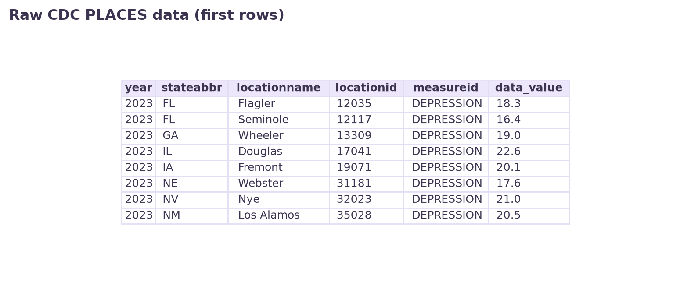
images/raw_cdc_sample.png.{kind=link}
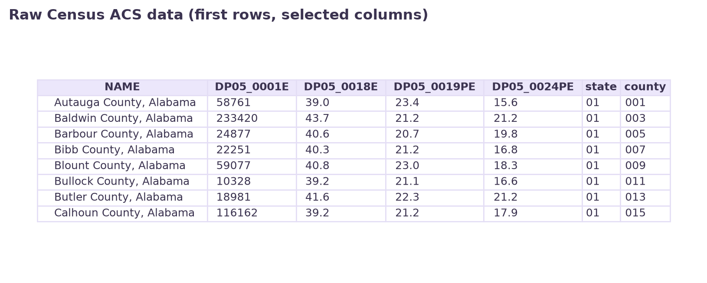
images/raw_census_sample.png.{kind=link}
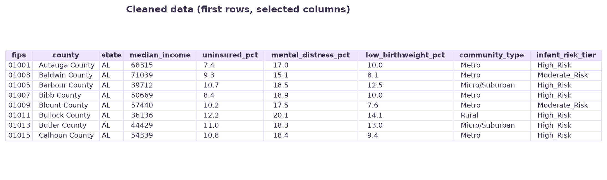
images/clean_sample.png.Cleaning steps
Add a short plain-language discussion of the cleaning decisions and why each was made.
| Step | What was done | Result |
|---|---|---|
| CDC PLACES | The pull held rows from two release years. The most recent year available for each county and measure was kept, and the three measures were reshaped into one row per county. | 9,061 rows to 3,144 counties |
| Census ACS | Suppressed estimates, coded as large negative numbers such as -666666666, were converted to missing values. | 37 values set to missing |
| County Health Rankings | 14 measures were selected. Percentages stored as proportions were multiplied by 100. | 3,204 rows |
| USDA codes | Codes 1 to 3 were grouped as Metro, 4 to 6 as Micro/Suburban, and 7 to 9 as Rural. | 3,233 counties |
| Merging | The four sources were joined on the five-digit county code. Rows without a match in all sources were dropped, including Puerto Rico municipalities that the other sources do not cover. | 3,222 to 3,143 counties |
| Checks | State total rows were removed, and percentage columns were checked to fall between 0 and 100. | No rows affected |
| Missing values | Counties with a missing value in any column were removed. The columns with the most gaps were teen birth rate (242), depression and mental distress (187 each), mental health providers (171), primary care (166), low birth weight (108), and air pollution (85). | 652 removed, 2,491 remain |
| Label | Counties were split into three equal-size groups (Low_Risk, Moderate_Risk, High_Risk) by low birth weight. | Final size 2,491 by 36 |
Effect of removing incomplete counties
| Community type | Before | After | Share lost |
|---|---|---|---|
| Rural | 1,301 | 856 | 34% |
| Metro | 1,186 | 1,036 | 13% |
| Micro/Suburban | 656 | 599 | 9% |
Discuss this limitation in your own words: rural counties lost the largest share because small counties often have suppressed estimates.
Variables in the clean dataset
Show all 36 columns
| Column | Source | Meaning |
|---|---|---|
fips | Identifier | Five-digit county code (state plus county) |
county, state | County Health Rankings | County name and state abbreviation |
total_population | Census ACS | Total population |
median_age | Census ACS | Median age in years |
under_18_pct | Census ACS | Percent of the population under 18 |
over_64_pct | Census ACS | Percent of the population 65 and over |
single_mother_pct | Census ACS | Percent of women ages 15 to 50 with a birth in the past year who were widowed, divorced, or never married |
bachelors_pct | Census ACS | Percent of adults 25 and over with a bachelor's degree |
disability_pct | Census ACS | Percent of the civilian noninstitutionalized population with a disability |
unemployment_pct | Census ACS | Unemployment rate of the civilian labor force |
median_income | Census ACS | Median household income in 2022 inflation-adjusted dollars |
uninsured_pct | Census ACS | Percent without health insurance coverage |
vacant_housing_pct | Census ACS | Percent of housing units that are vacant |
renter_pct | Census ACS | Percent of occupied housing units that are renter-occupied |
no_vehicle_pct | Census ACS | Percent of occupied housing units with no vehicle |
median_rent | Census ACS | Median gross rent in dollars |
mental_distress_pct | CDC PLACES | Adults reporting frequent mental distress, crude prevalence in percent |
short_sleep_pct | CDC PLACES | Adults sleeping less than 7 hours, crude prevalence in percent |
depression_pct | CDC PLACES | Adults ever told they have a depressive disorder, crude prevalence in percent |
low_birthweight_pct | County Health Rankings | Percent of live births with low birth weight |
child_poverty_pct | County Health Rankings | Percent of children living in poverty |
smoking_pct | County Health Rankings | Percent of adults who smoke |
obesity_pct | County Health Rankings | Percent of adults with obesity |
inactivity_pct | County Health Rankings | Percent of adults who are physically inactive |
excessive_drinking_pct | County Health Rankings | Percent of adults reporting excessive drinking |
food_insecurity_pct | County Health Rankings | Percent of the population with food insecurity |
some_college_pct | County Health Rankings | Percent of adults ages 25 to 44 with some post-secondary education |
teen_birth_rate | County Health Rankings | Teen births as reported by County Health Rankings |
mental_health_provider_rate | County Health Rankings | Mental health providers as reported by County Health Rankings |
primary_care_rate | County Health Rankings | Primary care physicians as reported by County Health Rankings |
income_ratio | County Health Rankings | Ratio of higher-income to lower-income household income |
pm25 | County Health Rankings | Average fine particulate matter in the air |
poor_mental_health_days | County Health Rankings | Average number of poor mental health days per month |
community_type | USDA | Metro, Micro/Suburban, or Rural, grouped from the 2023 Rural-Urban Continuum Codes |
infant_risk_tier | Derived | Low_Risk, Moderate_Risk, or High_Risk: three equal-size groups of counties by low birth weight |
Exploring the data
Add a short introduction to the figures. Every figure needs a title, labeled axes, color, and a two-sentence caption.
{kind=link}
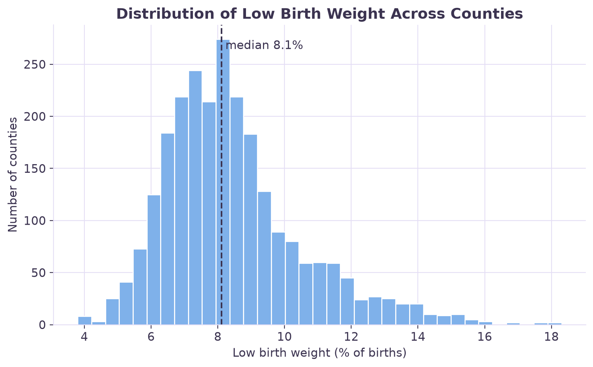
images/fig01.png.Idea: histogram of low birth weight
{kind=link}
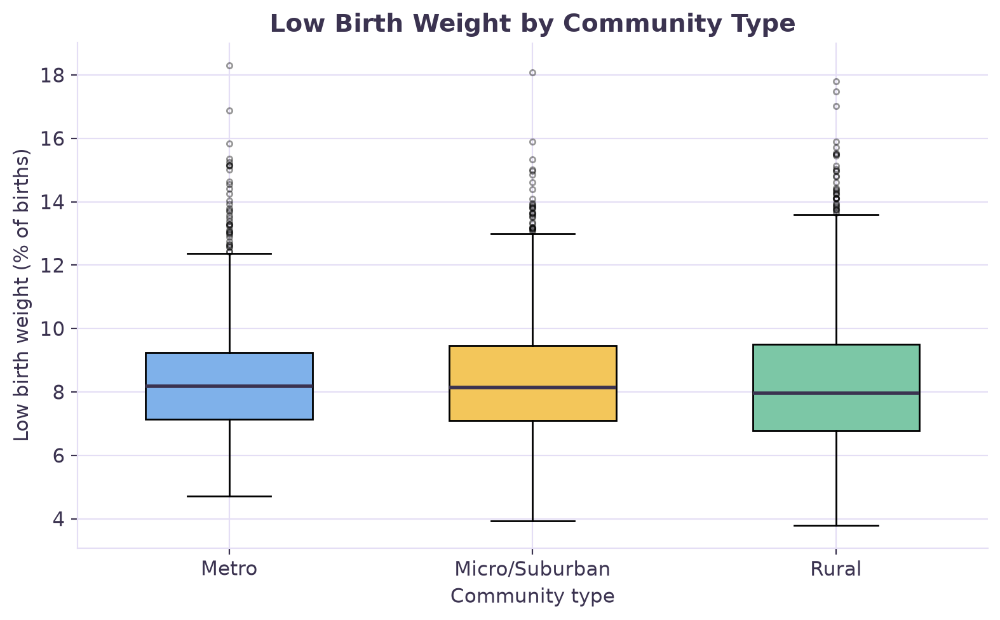
images/fig02.png.Idea: boxplot of low birth weight by community type
{kind=link}
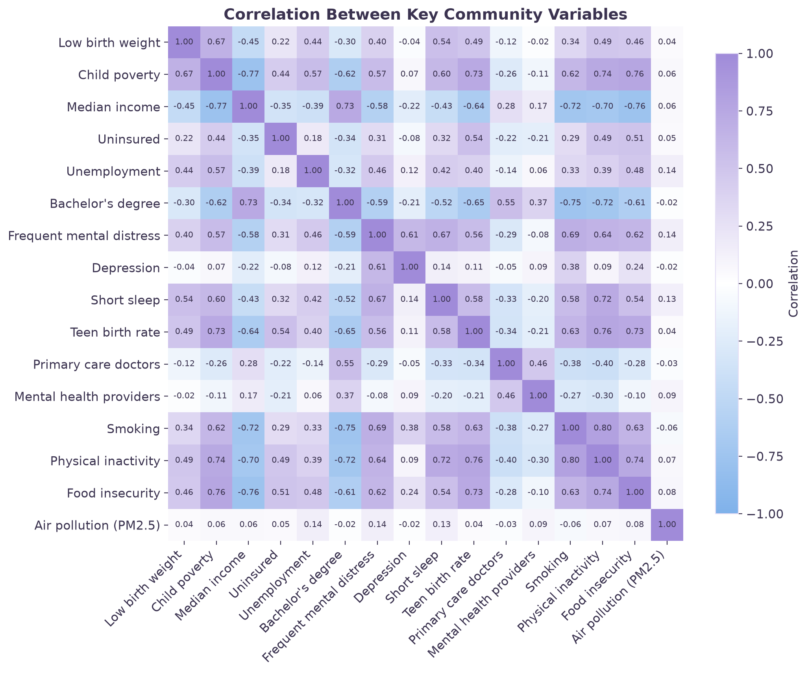
images/fig03.png.Idea: correlation heatmap of the numeric columns
{kind=link}
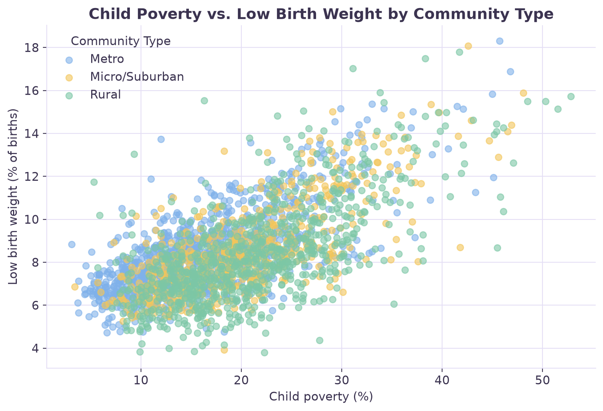
images/fig04.png.Idea: scatter of median income against low birth weight
{kind=link}
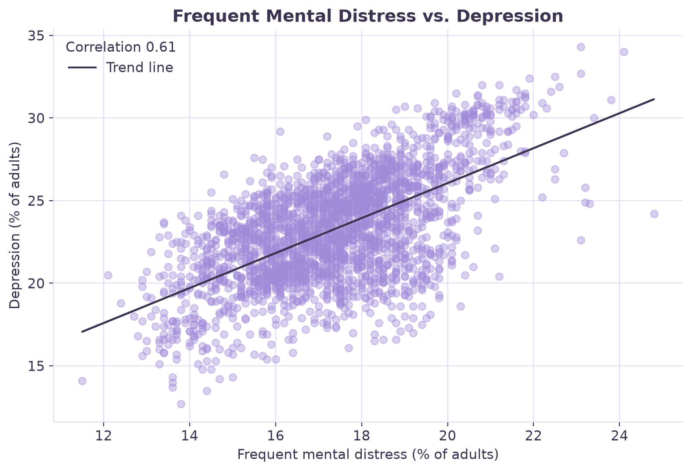
images/fig05.png.Idea: scatter of frequent mental distress against low birth weight
{kind=link}
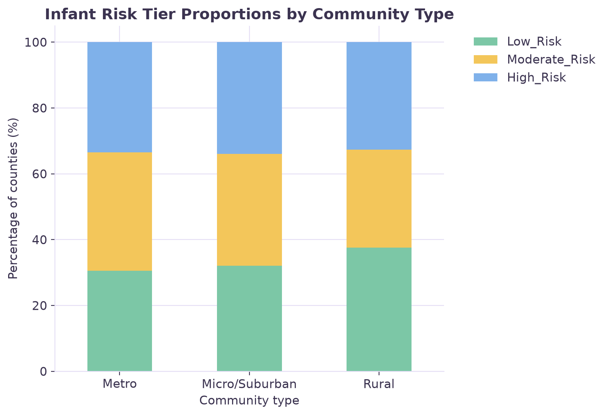
images/fig06.png.Idea: counts of counties in each infant risk tier
{kind=link}
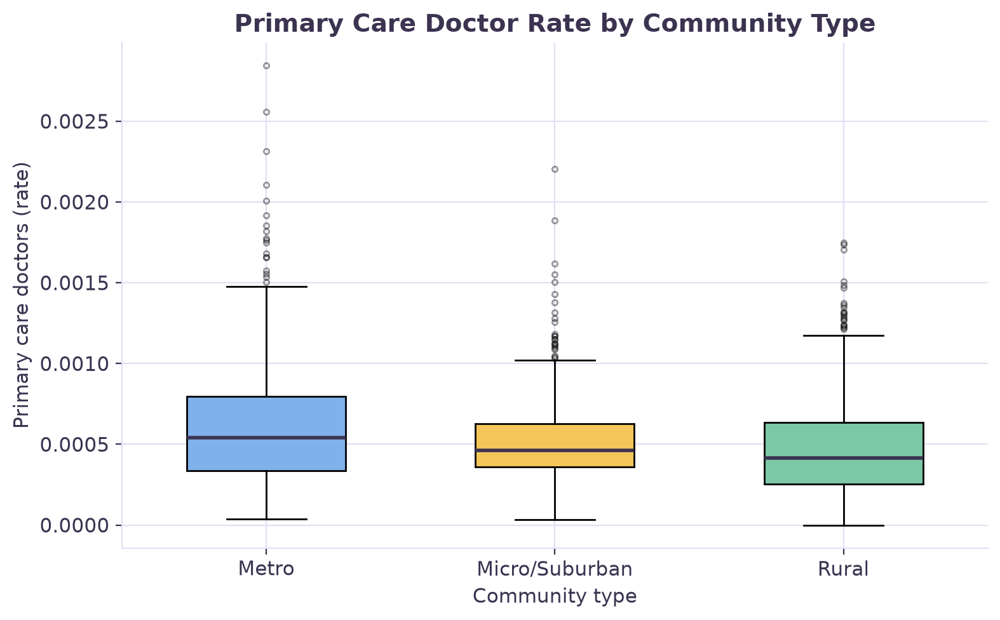
images/fig07.png.Idea: missing values by column before cleaning
{kind=link}
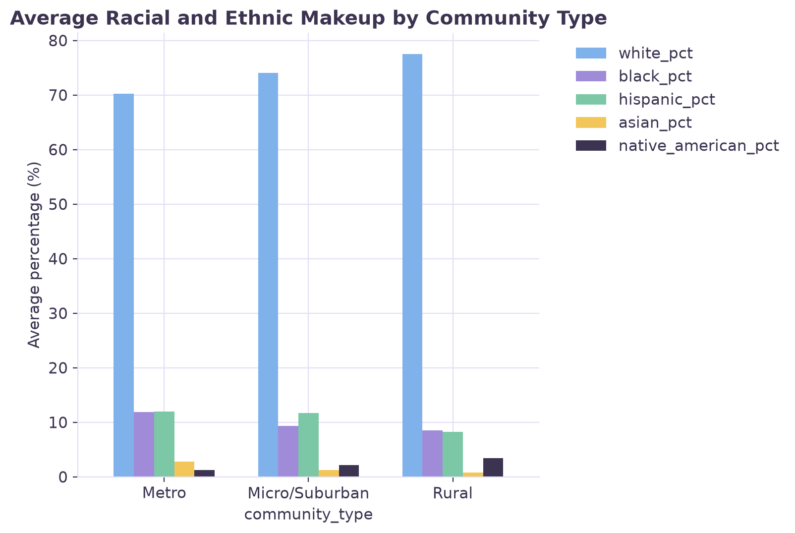
images/fig08.png.Idea: community type counts before and after cleaning
{kind=link}
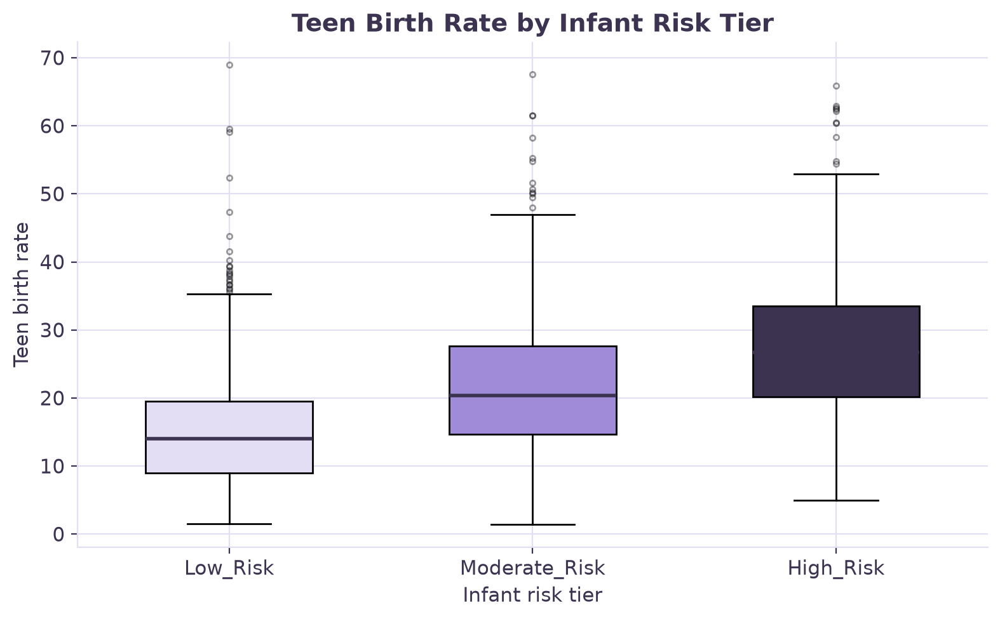
images/fig09.png.Idea: histogram of median household income
{kind=link}
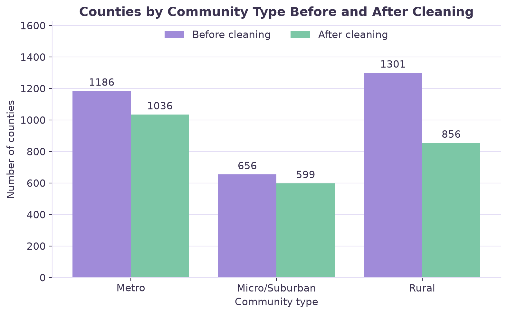
images/fig10.png.Idea: boxplot of depression rate by infant risk tier